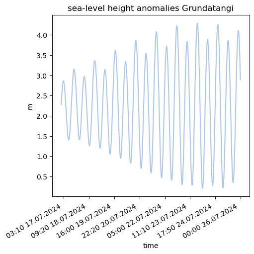

Overview of available surface observations#
This notebook provides an overview of different surface observations available. OBS: so far only using Grundartangi data
import subprocess
import os
import pandas as pd
import netCDF4
import numpy as np
import glob
import time
import matplotlib.pyplot as plt
import copy
import xarray as xr
from datetime import datetime, timedelta
from ocean_c_lab_tools import *
from celluloid import Camera
import PyCO2SYS as csys
import seawater as sw
from roms_regrid import *
import matplotlib.dates as mdates
f='/expanse/lustre/projects/cos100/uheede/Iceland_observations/Grundartangi_17072024-25072024.xls'
grundartangi = pd.read_excel(f,decimal=',',engine='xlrd')
from windrose import WindroseAxes
ax = WindroseAxes.from_ax()
ax.bar(grundartangi['Vindatt (deg)'], grundartangi['Vindur (m/s)'], normed=True, opening=0.8, edgecolor='white')
ax.set_legend()
ax.set_title('wind rose for July 2024')
Text(0.5, 1.0, 'wind rose for July 2024')
palette = plt.get_cmap('tab20')
fig, axs = plt.subplots(1, 1, figsize=(5, 5), layout='constrained')
axs.plot(grundartangi['Timabil '],grundartangi['Flodatafla (m)'],color=palette(1))
axs.set_title('sea-level height anomalies Grundatangi')
axs.set_ylabel('m')
axs.set_xlabel('time')
axs.xaxis.set_major_locator(mdates.MonthLocator(bymonth=(1, 7)))
for label in axs.get_xticklabels(which='major'):
label.set(rotation=30, horizontalalignment='right')
axs.invert_xaxis()

plt.plot(grundartangi['Lofthiti (degC)'],color=palette(7))
plt.title('air temperature ')
plt.ylabel('degC')
plt.xlabel('time')